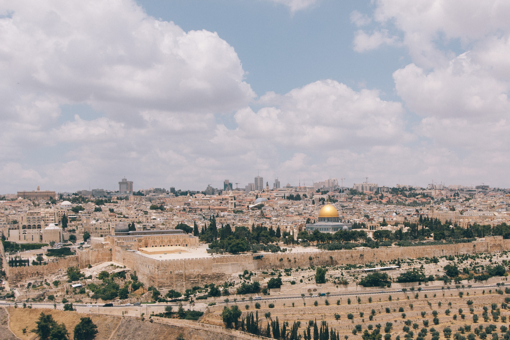

Yerushalayim is the most beautiful city in the world. Here are some of the
most signifigant religious and cultural site in all of Judaism. Despite centuries of exile,
loss and pain the Jewish people have never ceased to yearn to return to this holy
city. Unfortunatley, with the devastating pandemic that has wrecked havoc on the
whole world the gates to this holy country and specifically this holy city have
been shuttered to the world. Like in times of past exile, Jews of the world can
only hope to one day return.
In the meantime, I have created this webpage to display
some of the most beautiful sites Yerushalayim to give a small
taste of what this city has to offer.